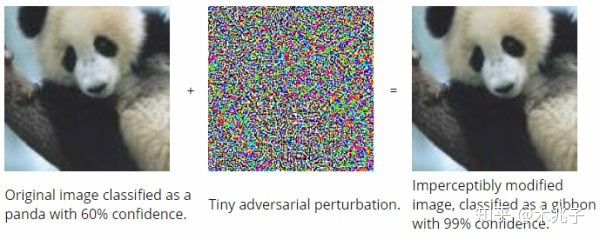

|
Introduction You may heard about 'adversarial images', meaning that an attacker maliciously modified an image to another. For example, the left image is the orginal image panda, and the right image is its maliciously modified one and it is classified as gibbon. So here, we invite you to help us recognize malious images on which obvious modification can by seen. |
|  |